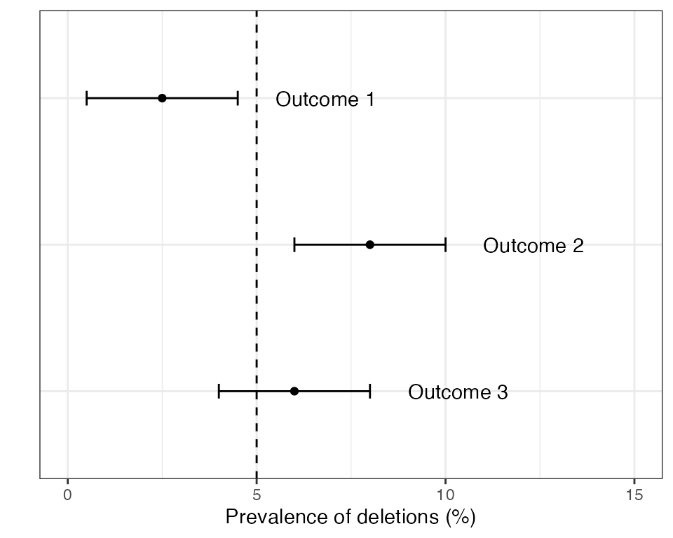

vignettes/rationale6_master_protocol.Rmd
rationale6_master_protocol.RmdIn 2020, the WHO released the Master Protocol for surveillance of pfhrp2/3 deletions and biobanking to support future research(2020). The original version of the Master Protocol recommended a sample size of 370 per domain, split into 10 sites of 37 samples each. It was later found that there were some numerical errors in this calculation, and the protocol was updated to 600 samples per domain. This larger sample size has increased power and leads to more precise estimates of the prevalence of pfhrp2/3 deletions. However, there are some lingering issues with the sample size argument that go deeper than simple numerical errors, and that motivate the need for an alternative approach.
The recommended approach in the 2020 Master Protocol begins with estimating the prevalence of deletions and constructing a 95% CI around this estimate. There are three possible outcomes:
Examples of these three outcomes are shown in the plot below:

If outcome 2 is found in any domain then the country is recommended to switch RDTs to a brand that does not rely exclusively on the HRP2 protein for detecting P. falciparum. If outcomes 1 or 3 are detected in all domains then some form of periodic monitoring is still advised, but the urgency is lower.
Let \(N\) be the total sample size over all sites (in our earlier notation we would say \(N=nc\), where \(n\) is the per-site sample size and \(c\) is the number of sites). The sample size argument in the 2020 Master Protocol works by choosing a value of \(N\) such that the 95% CI exactly touches the 5% threshold, but does not cross it. This leads to the following formula:
\(N \geq z_{\tiny 1 - \alpha/2}^2 \frac{\displaystyle p(1-p)}{\displaystyle (p-\mu)^2}D_{eff}\)
where \(p\) is the true prevalence of pfhrp2/3 deletions, \(\mu\) is the threshold that we are comparing against (normally 5%), \(D_{eff}\) is the design effect, and \(z_{\tiny 1 - \alpha/2}\) is the two-tailed critical value of the normal distribution at significance level \(\alpha\) (for example, \(z_{\tiny 1 - \alpha/2}=1.96\) for \(\alpha=0.05\)). This formula can be found on page 4 of the 2020 Master Protocol in slightly different notation.
The sample size formula above has a direct connection to how we calculate CIs. Recall from previous sections that a standard way of constructing a confidence interval around the prevalence estimate \(\hat{p}\) is to use the formula \(\hat{p} \pm z_{\tiny 1 - \alpha/2}\sqrt{\frac{\displaystyle \hat{p}(1-\hat{p})}{\displaystyle N}D_{eff}}\). If our objective is to make CIs just touch the target threshold then we can achieve this by equating this formula to \(\mu\). We can then rearrange the CI formula in terms of \(N\) to get the sample size formula above (if you are handy with algebra you might want to give this a go). Interestingly, we get the same formula whether we treat the \(\pm\) symbol as a plus (upper CI) or a minus (lower CI), meaning we can use the same sample size formula whether the prevalence is above or below the threshold. The reason for highlighting this connection is to emphasize that the sample size formula above is intrinsically linked to method for calculating confidence intervals.
There is one subtle point worth mentioning; the sample size formula from the Master Protocol is in terms of \(p\), but the CI formula is in terms of \(\hat{p}\). The value \(p\) is our assumed true prevalence of deletions, whereas \(\hat{p}\) is our estimate of the prevalence of deletions. So \(p\) is a fixed value but \(\hat{p}\) will vary around the true value, sometimes being slightly higher and sometimes slightly lower. This point will become important later.
As mentioned in the introduction to this section, there were some numerical mistakes in the original version of the Master Protocol that meant the value \(N=370\) had to be revised. Let’s work through the revised protocol to update this value ourselves.
The updated protocol assumes \(p=8\%\) as a representative high prevalence level (i.e., above 5%) and \(p=3.2\%\) as a representative low prevalence level. It uses a design effect of \(D_{eff}=1.5\) to account for observations correlated within clinics. It also (somewhat confusingly) mentions a 1-sided test at 95% confidence, which is at odds with the description of a two-sided CI - we will assume a two-sided test below.
For the high prevalence level we obtain:
p <- 0.08
Deff <- 1.5
z <- qnorm(1 - 0.05/2)
Deff * z^2 * p * (1 - p) / (p - 0.05)^2
#> [1] 471.2189For the low prevalence level we obtain:
p <- 0.032
Deff <- 1.5
z <- qnorm(1 - 0.05/2)
Deff * z^2 * p * (1 - p) / (p - 0.05)^2
#> [1] 550.8937We would round these values to 472 and 551. These numbers are slightly different to those in the updated protocol (500 and 584, respectively), indicating there is still some discrepancy between the formula in the protocol and how these values are calculated. Note that we cannot fix this by using a one-sided assumption (\(z_{\tiny 1 - \alpha}=1.64\)), as this leads to different values again. The good news is that the updated Master Protocol is conservative, rounding up to 600. The bad news is that even this value is not sufficient to achieve good power due to deeper issues with the approach.
The main issue with the approach above is that it mixes precision-based arguments with hypothesis testing. If we are trying to design a study to achieve a particular margin of error around our prevalence estimate then it makes sense to work from the CI formula above - for example, we might want to estimate the prevalence of pfhrp2/3 deletions to within \(\pm\) 10%. However, in the case of the Master Protocol we will use the CI to make a categorical decision as to whether prevalence is above or below a threshold, meaning this is more akin to a hypothesis test. We can therefore ask - what is the power of this test?
Statistical power is defined as the probability of correctly rejecting the null hypothesis. In other words, it is the probably of detecting an effect if it is really there. We want power to be high - typically 80% or higher. In this particular use case, a high power means our study has a good chance of concluding that the prevalence of pfhrp2/3 deletions is above 5% if it really is above 5%. If power is low then our study has a good chance of missing this interesting result, which begs the question of whether it was really worth investing time and resources into a study that had a high chance of failure.
Imagine we have chosen our sample size using the method above, such that the lower CI just touches the 5% threshold. This is based on an assumed true prevalence of \(p\), which we will assume is \(p=8\%\). But the estimated prevalence, \(\hat{p}\), will vary around the true value, sometimes being higher and sometimes lower. When it is lower, we will find that the CI crosses the 5% threshold and we will get an inconclusive result. When it is higher, we will find that it does not cross the 5% threshold and we will (correctly) conclude that prevalence is above 5%. There is roughly equal chance that \(\hat{p}\) is above or below \(p\), meaning we expect power to be around 50%. This is far below the usual level of 80% that is used when designing a study.
We can explore this in various ways in code. First, let us completely remove the design effect just to simplify the problem. This means we can calculate the power of the approach exactly by brute force. The sample size formula above would give \(N=315\) when \(D_{eff}=1\), so we will use this value here.
# specify assumed values
N <- 315
p <- 0.08
z <- qnorm(1 - 0.05/2)
# calculate the lower CI for every possible observed number of deletions
p_est <- (0:N) / N
CI_lower <- p_est - z * sqrt(p_est * (1 - p_est) / N)
# establish if we get a conclusive high prevalence result for each possible
# number of deletions, and weight this by the chance of each result to get the
# total power
conclude_high <- (CI_lower > 0.05)
exact_power <- sum(conclude_high * dbinom(0:N, N, p))
exact_power
#> [1] 0.4636098We can see that power is around 46%, which matches our intuition that it should be around 50%. The slight discrepancy comes from the fact that \(\hat{p}\) is slightly more likely to be below \(p\) than above it for these assumed values.
But what about if we include the design effect of \(D_{eff}=1.5\)? Here, the formula gave \(N=472\) for the same assumptions. It is slightly tricky to evaluate the true power here - we have to use simulation rather than brute force. We repeatedly simulate data with a knwon level of intra-cluster correlation corresponding to our chosen design effect, then we calculate CIs and proceed as normal.
N <- 472 # we will assume 8 clusters of 59 so we can hit this value exactly
p <- 0.08
z <- qnorm(1 - 0.05/2)
Deff <- 1.5
ICC <- (Deff - 1) / (59 - 1) # the ICC that corresponds to this Deff
# simulate a large number of times
set.seed(1)
CI_lower <- rep(NA, 1e5)
for (i in seq_along(CI_lower)) {
# draw from a beta-binomial model with the chosen level of ICC
x <- DRpower:::rbbinom_reparam(n_clust = 8, N = 59, p = p, rho = ICC)
# calculate CIs taking into account the design effect
p_est <- sum(x) / N
CI_lower[i] <- p_est - z * sqrt(Deff * p_est * (1 - p_est) / N)
}
# how often is the lower CI above the 5% threshold
sim_power <- mean(CI_lower > 0.05)
sim_power
#> [1] 0.49871Again, we find that power is around 50%. In other words, including the design effect does not fix this issue, as the increased sample size is matched by wider CIs. This would be true for any design effect.
Finally, what happens if we use the actual recommended value of \(N=600\) from the updated Master Protocol? Running the same simulation-based analysis but with 10 clusters of size 60 we obtain the following result:
#> empirical power:
#> [1] 0.60766So power is still far below 80% even for the updated values. This is not due to a numerical mistake, but rather is a fundamental issue with the logic of the approach. We should not use the sample size formula presented in section 6.1. The best way to deal with issue is to go back to the drawing board and approach this from a different statistical angle.